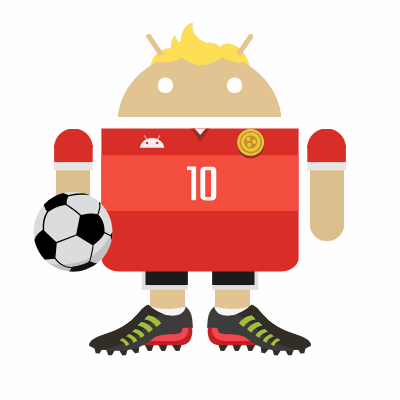

About Me
Name: Harry

Grade: 9
| Period | Class | ||||||||||
| 0 | PE | ||||||||||
| 1 | English 1H | ||||||||||
| 2 | Biology | ||||||||||
| 3 | Spanish 1 | ||||||||||
| 4 | AVID 9 | ||||||||||
| 5 | Geometry P | ||||||||||
| 6 | Comp Sci Prn AP |
Hi, my name is Harry and welcome to my website. I am a ninth grader at La Quinta. I have a zero period, which requires me to wake up
early in the morning. But it is not a problem, as PE in the morning wakes me up. Outside of school, I like to play games such as Roblox
and certain FPS games. I recently attended McGarvin Intermediate school for 7th and 8th grade. It was also where I earned 2
consecutive 4.0 GPAs. When it comes to sports, I like to play soccer. However, I cannot play on the LQ boy's soccer team due to scheduling
issues.
Hobbies
- Playing Soccer
- Playing Video Games
- Navigating Websites
- Doing Homework (not that I like it)
Top 5 Favorite Songs
- God's Plan (Drake)
- Despacito (Luis Fonsi)
- The Lazy Song (Bruno Mars)
- The One (Chainsmokers)
- One Dance (Drake)

Favorite Quote: “Your love makes me strong, your hate makes me unstoppable.”
― Cristiano Ronaldo
- Playing Soccer
- Playing Video Games
- Navigating Websites
- Doing Homework (not that I like it)
Top 5 Favorite Songs
- God's Plan (Drake)
- Despacito (Luis Fonsi)
- The Lazy Song (Bruno Mars)
- The One (Chainsmokers)
- One Dance (Drake)